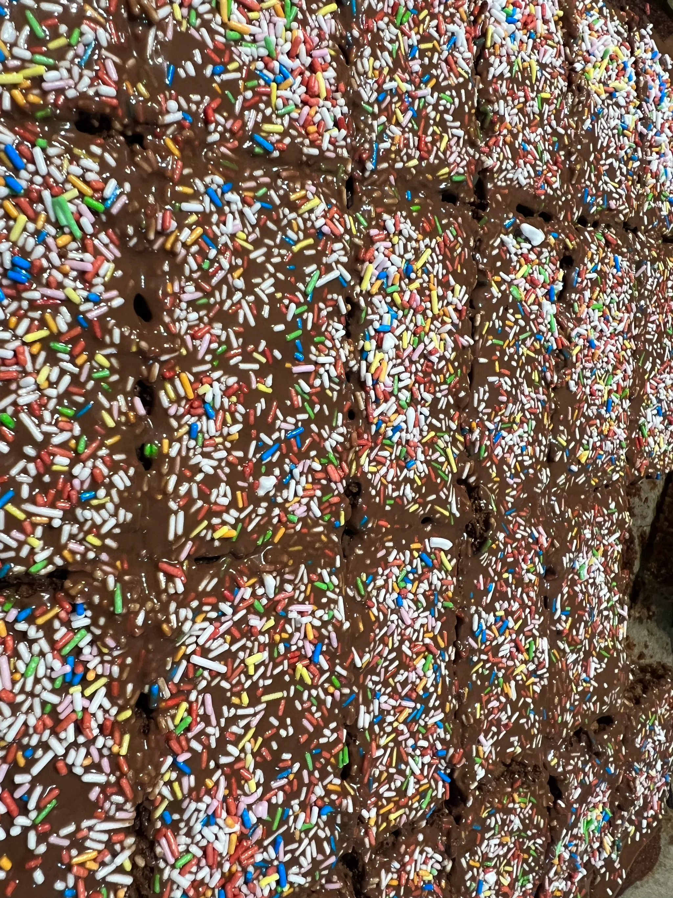

Schokobrot
Home

Diese süßen Schokoschnitten können sehr einfach und schnell zubereitet werden und sind ein Hingucker bei jeder Party.
Die Dekoration kann man selbst individuel anpassen und kreativ werden.
Zutaten
- 250g Butter
- 250g Zucker
- 6 Eier
- 125g Vollmilchschokolade
- 125g gemahlene Mandeln
- 100g Mehl
- 125g Konfitüre
- Optional: Streusel, Kokos o. ä.
Zubereitung
- Butter, Zucker und Eier zusammenrühren
- Vollmilchschokolade schmelzen und zusammen mit Mandeln und Mehl in den Teig mischen
- Backblech mit Backpapier belegen und Ofen auf Umluft auf 175° Grad vorheizen
- Teig auf Blech verteilen und 20 minuten im Ofen backen
- fertigen Kuchen in 3cm x 5cm Stückchen schneiden und kalt stellen
- Konfitüre schmelzen und auf Kuchen streichen und evtl mit Streusel oder ähnliches dekorieren